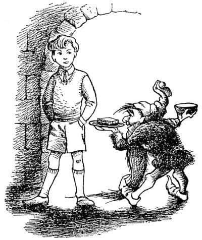
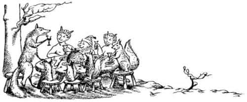
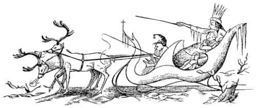
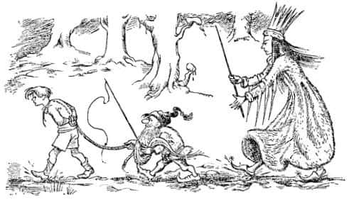
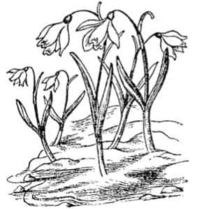
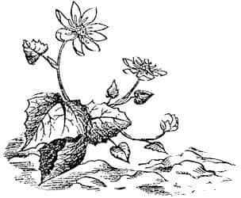

Aslan Yakınımızda
Bu sırada Edmund hayal kırıklığı içindeydi. Cüce kızağı hazırlamaya gittiğinde, Cadı’nın geçen seferki karşılaşmalarında olduğu gibi ona yine iyi davranmasını bekliyordu. Fakat Cadı hiçbir şey söylemedi. Ve sonunda Edmund’un cesaretini toplayıp da “Lütfen Majesteleri, biraz Türk lokumu yiyebilir miyim? Siz – siz – dediniz ki—” demesine kalmadan, “Sus, aptal!” demişti Cadı. Sonra aklını çelen bir şey olmuş da kendi kendine konuşuyormuş gibi “ama yumurcağın yolda bayılması da iyi olmaz” dedi ve yeniden ellerini çırptı. Başka bir cüce göründü.
“İnsani yaratığa yiyecek ve içecek getir” dedi.
Cüce uzaklaştı ve az sonra su dolu demir bir kâse ve üzerinde kuru bir ekmek parçası olan demir bir tabakla geri döndü. Bunları Edmund’un yanında yere koyarken iğrenç bir şekilde gülümsedi ve:
“Küçük Prens için Türk lokumu. Ha! Ha! Ha!” dedi.

“Geri götür bunları” dedi Edmund asık suratla. “Kuru ekmek istemiyorum.” Fakat Cadı aniden yüzünde korkunç bir ifadeyle ona döndü ve Edmund özür dileyerek ekmeği kemirmeye başladı. Ekmek o kadar bayattı ki zorlukla yutabiliyordu.
“Bir daha ekmek yemeden önce bunu bulduğuna şükredeceksin” dedi Cadı.
Edmund ekmeğini gevelerken birinci cüce geri geldi ve kızağın hazır olduğunu söyledi. Beyaz Cadı Edmund’a da kendisiyle gelmesini emrederek ayağa kalktı ve dışarıya çıktı. Avluya çıktıklarında yeniden kar yağmaya başlamıştı fakat Cadı buna hiç aldırmadı ve Edmund’u kızakta yanına oturttu. Yola çıkmadan önce Maugrim’i çağırdı ve o da kocaman bir köpek gibi aceleyle kızağın yanına geldi.
“Yanına kurtların en hızlılarını al ve hemen kunduzların evine git” dedi Cadı “ve orada bulduğun herkesi öldür. Eğer orayı terk etmişlerse son hızla Taş Masa’ya git, ama görünmemeye dikkat et. Orada saklanarak beni bekle. Bu arada benim nehri geçebilmem için kilometrelerce batıya gitmem gerekiyor. Bu insanlar Taş Masa’ya erişmeden önce senin onları yakalama ihtimalin var. Eğer onları bulursan ne yapacağını biliyorsun!”
“Duydum ve itaat edeceğim, Ey Kraliçe” diye hırladı Kurt ve aniden bir atın dörtnala kalkabileceği çabuklukla koşarak karların içinde kayboldu. Birkaç dakika sonra, yanına aldığı başka bir kurtla beraber bendin üzerinde kunduzların evini koklamaktaydı. Kuşkusuz evi bomboş buldular. Eğer geceleyin hava güzel olsaydı, bu, çocuklar ve kunduzlar için çok korkunç bir şey olacaktı. Çünkü o zaman kurtlar onların izini sürebileceklerdi – ve bire on bahse girerim ki mağaraya ulaşmadan onları yakalarlardı. Fakat yeniden kar yağmaya başladığından kokuları kaybolmuş, ayak izleri bile karla kaplanmıştı.
Bu sırada cüce, geyikleri kırbaçlamış, Cadı ve Edmund kemerin altından geçerek karanlığa ve soğuğa dalmışlardı. Bu, üzerinde paltosu olmayan Edmund için kötü bir yolculuktu. Çeyrek saat bile yol almadan önü karlarla kaplanmıştı – kısa bir süre sonra önünü silkelemeyi bırakmıştı çünkü ne kadar çabuk silkelerse silkelesin, önünde yeni karlar birikiyordu ve çok da yorgundu. Kısa bir süre sonra iliklerine kadar ıslanmıştı. Ne kadar da sefildi! Şimdi, Cadı onu sanki kral yapmak niyetinde değilmiş gibi görünüyordu. Onun iyi, nazik ve gerçekte haklı olan taraf olduğuna kendini inandırmak için söylediği her şey artık gülünç geliyordu. Şu anda diğerleriyle – Peter’le bile – olmak için her şeyini verebilirdi. Kendini rahatlatmanın tek yolu, bütün bunların bir rüya olduğuna ve her an uyanacağına inanmaya çalışmaktı. Ve saatler süren yolculuk boyunca bunu başardı.
Üstüne sayfalar dolusu bile yazsam anlatabileceğimden daha uzun sürdü bu durum. Fakat ben, kar yağışının kesildiği, sabahın ilk ışıklarıyla birlikte onların hızla ilerledikleri zamana atlayacağım. Yolculukları sürüyordu, karların dinmek bilmeyen hışırtısı ve geyiklerin koşum takımlarının gıcırtısından başka bir ses duyulmuyordu. Ve Cadı sonunda “Bu da nesi böyle? Dur!” dedi ve durdular.
Edmund, onun kahvaltı üstüne bir şey söyleyeceğinden nasıl da umutlanmıştı! Fakat o değişik bir nedenle durmuştu. Az ilerde bir ağacın altında, bir sincap, karısı ve çocukları, iki satir, bir cüce ve yaşlı bir tilkiden oluşan mutlu bir grup, yuvarlak bir masanın etrafında taburelere oturmuşlardı. Edmund, ne yediklerini tam olarak göremiyordu ama çok nefis kokuyordu. Üzerinde çobanpüskülünden süslerin olduğu erikli muhallebi gibi bir şeydi, ama pek emin değildi. Kızak durduğu anda, grubun en yaşlısı olduğu belli olan Tilki sağ pençesiyle tuttuğu bardakla az önce ayağa kalkmıştı ve sanki bir şeyler söyleyecekmiş gibiydi. Fakat tüm grup duran kızağı ve içindekinin kim olduğunu gördüklerinde yüzlerindeki bütün neşe kayboldu. Baba sincap çatalı ağzına götürmek üzereyken, satirlerse çatallar ağızlarında kalakalmışlar ve yavru sincaplar dehşetle viyaklamışlardı.

“Bu ne demek oluyor?” diye sordu Cadı Kraliçe. Kimse cevaplamadı.
“Konuşun mikroplar!” diye seslendi. “Cücemin kırbacıyla sizi dillendirmesini mi istiyorsunuz yoksa? Bu oburluğun, israfın ve düşkünlüğün anlamı nedir? Bütün bunları nereden aldınız?”
“Lütfen, Majesteleri” dedi Tilki, “Bunlar bize verildi. Ayrıca ben siz Majesteleri’nin sağlığına içecek kadar cüretkâr—”
“Kim verdi bunları size?” dedi Cadı.
“N-n-n-noel Baba” diye kekeledi Tilki.
“Ne?” diye gürledi Cadı, kızaktan fırlayıp dehşete düşmüş hayvanlara doğru birkaç adım yaklaşarak. “Buraya gelmemiştir o! Gelmiş olamaz! Bunu söylemeye nasıl cesaret edersiniz – ama hayır. Bunun bir yalan olduğunu söylediğiniz takdirde affedileceksiniz.”
İşte o an genç sincaplardan biri çıldırdı.
“Geldi işte – geldi işte – geldi işte!” diye ciyak ciyak bağırdı küçük kaşığını masaya vurarak. Edmund, Cadı’nın dudaklarını ısırdığını ve yanağında bir damla kanın belirdiğini gördü. Sonra Cadı asasını kaldırdı. “Ah, yapma, yapma, lütfen yapma” diye bağırdı Edmund. Fakat Cadı onu dinlemedi, asasını salladı ve aniden mutlu grubun yerini, üzerinde taştan bir erikli muhallebi ve taş tabakların durduğu taş bir masanın etrafına oturmuş taş heykeller (biri taş çatalını ağzına götürmek için kaldırmış şekilde) aldı.
“Sana gelince” dedi Cadı, kızağa binerken Edmund’un yüzüne sersemletici bir tokat atarak, “bu sana casuslara ve hainlere yardım dilememeyi öğretir. Sür kızağı!” Ve Edmund bu hikâyede ilk defa kendinden başka birine acıdı. O küçük taş şekillerin yıllarca, gündüz ve karanlık geceler boyu sessiz, yüzlerinde yosunlar büyüyene ve hatta yüzleri parçalanıp dökülene kadar orada oturacağını düşünmek öylesine acıklı geliyordu ki.

Şimdi yine kararlı bir şekilde hızla ilerliyorlardı. Kısa bir süre sonra Edmund, hızla giderken üzerlerine sıçrayan karın geçen gecekinden çok daha sulu olduğunu fark etti. Hava da geçen geceye oranla sanki daha sıcaktı. Üstelik sis çökmeye başlamıştı. Gerçekten de, geçen her dakika hava daha da ısınıyor ve ortalığı sis kaplıyordu. Kızak o ana kadar gittiği gibi kolaylıkla ilerleyemiyordu artık. Önce bunun geyiklerin yorgunluğundan kaynaklandığını düşündü, ama az sonra bunun gerçek neden olamayacağını gördü. Kızak aniden sarsıldı, yana kaydı. Sanki taşlara çarpmış gibi sarsıntı sürüyordu ve cüce, zavallı geyikleri ne kadar kırbaçlarsa kırbaçlasın kızak gittikçe yavaşlıyordu. Yakınlardan tuhaf bir ses geliyordu, ama kızağın giderkenki sarsıntısı ve cücenin geyiklere bağırışı Edmund’un bu sesi tanımasına engel oluyordu; ta ki kızak yeniden yola devam edemeyecek şekilde kara saplanana kadar. Kızak durduğunda bir an sessizlik oldu. Ve Edmund bu sessizliğin içinde, nihayet diğer sesi tam anlamıyla dinleyebildi. Garip, tatlı, şırıldayan ve titreşen bir ses – ama o kadar da tuhaf değildi, çünkü daha önce duymuştu bu sesi – nerede duyduğunu bir hatırlayabilse! Sonra aniden hatırladı. Akan suyun sesiydi. Görülmemesine karşın çevrede mırıldayan, köpüren, sıçrayarak akan ve hatta (uzakta) gürleyen dereler vardı. Nedenini bilmemesine karşın, donun sona erdiğini anlayınca kalbi çarptı. Çok yakınlarda, ağaçların dallarından şıp-şıp-şıp sesleri geliyordu. Sonra bir ağaca bakarken büyük bir kar kütlesinin kayarak düştüğünü gördü. Bu, Narnia’ya girdiğinden beri rengini ilk kez gördüğü koyu yeşil bir köknar ağacıydı. Fakat seyretmeye ve sesleri dinlemeye daha fazla zamanı olmadı, çünkü Cadı:
“Oturup seyretme aptal! Kalk yardım et!” dedi.
Kuşkusuz Edmund itaat etmek zorundaydı. Kızaktan, kara indi (artık yarı erimiş bir haldeydi) ve kızağı saplandığı çamurdan çıkarmak için cüceye yardım etmeye başladı. Sonunda kızağı kurtardılar. Cüce, geyiklere çok zalimce davranarak kızağı biraz daha sürmeyi becerebildi. Şimdi kar gerçekten eriyordu ve her yerde yeşil ot kümeleri görünmeye başlıyordu. Edmund’un baktığı kadar uzun süre karlı bir dünyaya bakmadınızsa, o sonsuz beyazlıktan sonra bu yeşil kümelerin ne kadar ferahlık verdiğini anlamakta zorlanabilirsiniz. Sonra kızak yeniden durdu.
“İşe yaramıyor Majesteleri” dedi cüce, “bu karda kızak kullanamayız.”
“Öyleyse yürümemiz gerekiyor” dedi Cadı.
“Yürüyerek onları asla yakalayamayız” diye hırladı cüce. “Bizden çok önce yola çıktılar.”
“Sen benim danışmanım mısın, yoksa kölem mi?” dedi Cadı. “Söyleneni yap. İnsan denen yaratığın ellerini arkasına bağla ve ipin ucundan tut. Kırbacını da getir. Geyiklerin koşum takımlarını kes; onlar kendi kendilerine eve dönerler.”
Cüce denilenleri yaptı ve Edmund birkaç dakika içinde kendini, elleri arkasına bağlı olarak, olabildiğince çabuk yürümeye zorlanırken buldu. Yarı erimiş karda, çamurda ve ıslak otlarda sık sık kayıyordu. Her defasında cüce ona küfrediyor ve bazen de hafifçe kırbaçlıyordu. Cadı cücenin arkasından yürüyor ve sürekli “çabuk, çabuk” deyip duruyordu.
Geçen her an yeşillikler artıyor, karlı yerler azalıyordu. Ağaçlar karlı giysilerinden kurtuluyor, yakınlarda nereye bakarsanız bakın beyaz şekiller yerine köknarların koyu yeşilliğini, çıplak meşe ağaçlarının dikenli dallarını, kayınları ve karaağaçları görüyordunuz. Sonra sis, beyazdan altın rengine dönüştü ve az sonra da tamamıyla yok oldu. Harika bir gün ışığı ormanın zeminine vuruyor ve yukarıda, ağaçların tepelerinin arasından mavi bir gökyüzü görülüyordu.

Sonra daha harika şeyler olmaya başladı. Aniden bir köşeyi dönüp gümüş renkli huş ağaçlarının arasındaki bir açık alana geldiklerinde Edmund her yerin küçük sarı çiçeklerle – kırlangıç otu – kaplı olduğunu gördü. Su sesi daha da arttı. Gerçekten de biraz sonra, bir dereye geldiler. Öte yakasında yeni çıkmış kardelenleri gördüler.

“Sen kendi işine bak!” dedi cüce; Edmund’un kardelenlere bakmak için başını çevirdiğini görünce ipi şiddetle çekti.
Ancak bu Edmund’un görmesini engellemedi. Daha beş dakika geçmemişti ki Edmund yaşlı bir ağacın dibinde boy atan bir düzine – sarı, mor ve beyaz – çiğdem gördü. Sonra bir ses, su sesinden daha güzel bir ses duyuldu. Yürüdükleri patikanın yanındaki bir ağacın dalına konmuş bir kuş aniden ötmeye başladı. Buna az ilerideki başka bir kuşun cıvıltısı cevap verdi. Ve sonra sanki bu bir sinyalmiş gibi her taraftan ötüş ve cıvıltılar gelmeye başladı. Sonra bir anda bütün bir melodi duyuldu ve beş dakika geçmeden tüm orman kuşların şarkılarıyla çınlıyordu. Edmund nereye baksa dallara konmuş kuşlar ya da yukarıda süzülen, birbirini kovalayan, didişen, ya da tüylerini gagalarıyla temizleyen kuşlar görüyordu.

“Daha hızlı, daha hızlı” dedi Cadı.
Şimdi sisten hiçbir iz yoktu. Gökyüzü giderek mavileşiyor, arada bir beyaz bulutlar gelip geçiyordu. Geniş açıklık arazide çuhaçiçekleri vardı. Titreyen dallardan nem zerreciklerinin uçuşmasına neden olan serin ve harika kokuları seyyahlarımızın burnuna taşıyan hafif bir esinti çıktı. Ağaçlar tam anlamıyla canlanmaya başlamışlardı. Karaçamlar ve huş ağaçları yeşil, sarısalkımlar altın rengindeydiler. Kısa bir süre sonra kayın ağaçları zarif ve şeffaf yapraklar vermeye başladılar. Seyyahlar ağaçların altında yürürken ışık yeşile dönüşüyordu. Patikada bir arı vızıldadı.
“Bu kar erimesi değil” dedi cüce, “bu Bahar. Ne yapacağız? Senin kışın mahvoldu derim ben! Bu Aslan’ın işi.”
“Eğer ikinizden biri bu ismi yine anarsa” dedi Cadı, “o an öldürülecek.”